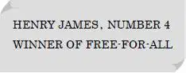
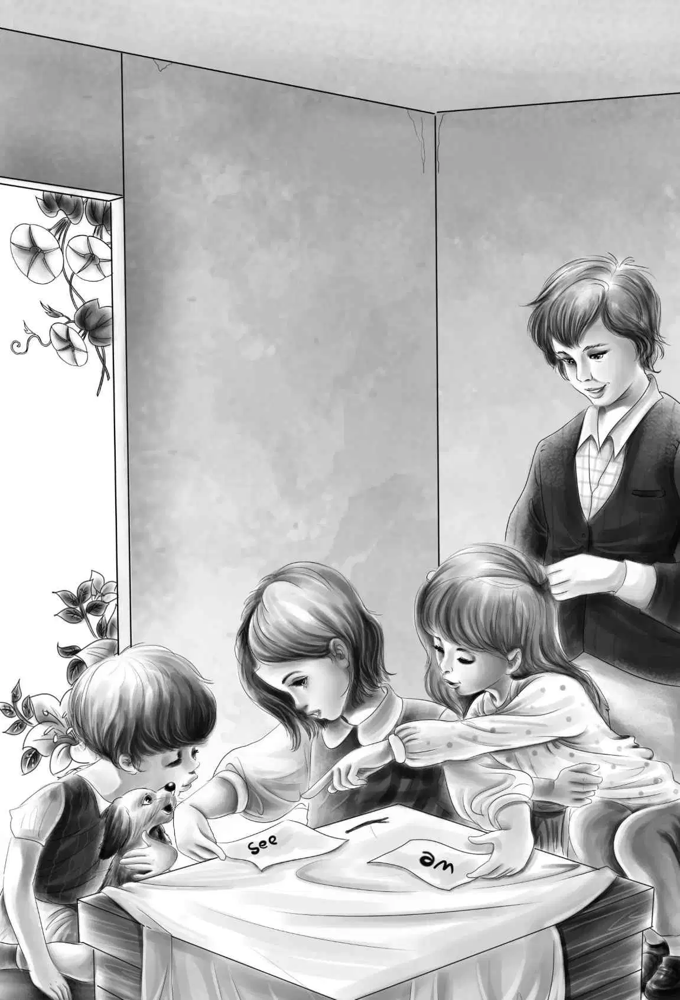
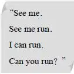

James Henry Alden was a very rich man．His big mills stood just between Greenfield and Silver City．
Now J．H．Alden liked boys．He liked to see them running and jumping and playing．So each year， with three other rich men， he gave a Field Day to the town of Silver City．And even the mills were closed on Field Day．
Every year the boys were in training for the races．And not only boys， but men also， thin and fat， and girls trained for Field Day．
There were prizes for all kinds of races-running and swimming and jumping．
But the best one was a foot race， called a free-for-all， because anyone could run in it．Mr．Alden gave a prize of twenty-five dollars and a silver cup to the winner of the free-for-all．Sometimes a boy won the race， sometimes a girl．Once a fat man had won it．
On Field Day Henry was cutting the grass for Dr．Moore．Suddenly the doctor stopped his car in the street and called to Henry．
“Hop in，” he said．“Today is Field Day， and I want you to see the races．”
Henry hopped in， and the doctor started the car．
“I’m sorry I can’t go，” said Dr．Moore， “and I want to know all about it．I want you to tell me who wins each race．”
Soon Henry found himself sitting on the bleachers．By and by a small boy climbed up the bleachers and sat beside him．Then a man called， “Free-for-all！ Come and get ready！ “
“What is that？” asked Henry．“A free-for-all？”
“Don’t you know？” asked the small boy．“Didn’t you see the one last year？”
“No，” said Henry．
The boy laughed．“That was a funny one，” he said．“There were two fat men in it， and some girls and boys．That boy over there won it．You should have seen him．He ran so fast you could hardly see his legs at all！ ”
Henry looked at the winner of last year’s race．He was smaller than Henry， but he was older．Suddenly Henry stood up and quietly left the bleachers．He went to the room where the boys were getting ready for the race．
“Do you want to run in the race？” a man asked him．
“Yes， I do，” replied Henry．
The man gave him some track clothes to put on．
“Where did you train？” he asked．
“I never was trained，” said Henry．
“These boys have been training all year，” remarked the man．
“Oh， I don’t think I’ll win，” answered Henry．“But I like to run．It’s lots of fun， you know．”
“So it is，” said the man．“So it is．”
Henry could hardly wait for the race to begin．He loved to run．But at last the race was called．It was time to start．Henry was Number 4．
Now Henry began to think．“It’s a long race，” he said to himself．“I must go easy at first．”
The bell rang．Off went the runners down the track．In almost no time Henry was far behind most of the other runners．But he did not seem to mind this．
“It’s fun to run， anyway，” he said again to himself．And he tried to see how easily he could run．
All at once he had another thought．“I have tried to see how easily I can run，” he said to himself．“Now I’ll try to see how fast I can run．”
Then all the people began to see how fast Henry could run．He ran faster and faster， and soon he passed the two girls ahead of him．Then he passed a fat man and a little boy．
The people began to shout， “Number 4！ Number 4！” Here was the kind of race they loved！
“Faster， faster！” cried Henry to himself．“I can run faster than this．”
He could．He passed Number 25 and Number 6．Then he passed Number 5 and Number 10．Only one runner was ahead of Henry now．It was Number 16．Then Henry began to think of winning the race．He knew how much the twenty-five-dollar prize would mean to Jessie and the rest of the children．
“I am going to win this race！” he said to himself “I must pass Number 16．”
He ran still faster．He could see the line at the end of the race．
“Number 4！ Number 4！” shouted the people．“He is going to win！”
When Henry was near Number 16， he put his head down and ran as fast as he could．He passed Number 16 and went across the line！ He had won！
The people shouted and shouted．Some men held Henry up high and carried him to Mr．Alden for the prize．
Then a man asked，“What is your name， boy？”
Henry did not know what to say．He did not want to tell his name．So he answered， “Henry James．” Now this was Henry’s name， but it was not all of his name．
At once the big sign said，

“Here is the prize， Henry James，” said Mr．Alden．“You can run well， my boy．I like to see you run．”
He gave Henry a silver cup and the twenty-five dollars．Then he shook hands with him．
Just then Dr．Moore came along and climbed up in the bleachers， but Henry did not see him．The doctor laughed to himself as Henry James shook hands with James Henry．
At last Henry got away from the people and started back to Dr．Moore’s．He had the twenty-five-dollar prize in his pocket．When Dr．Moore came home and found Henry cutting the grass， he laughed quietly to himself．
“I just got home，” said Henry．“I will tell you who won all the races．”
Dr．Moore did not tell Henry that he had been up in the bleachers．He let Henry tell him about the races．
“And who won the free-for-all？” he asked．
“I did，” said Henry．
“You did？” cried Dr．Moore．“Good for you！ What are you going to do with the money？”
“I’ll give it to Jessie，” answered Henry．
“Good，” said the doctor again．
When Henry arrived at the boxcar with the twenty-five dollars， he found dinner ready．Jessie had boiled the rest of the vegetables and put butter on top．The children began to eat， but， hungry as they were， they stopped when Henry told them about the race and showed them the silver cup．They were so excited that they couldn’t eat．
“You won the race， Henry？” cried Jessie， delighted．“Oh， I’m so glad！”
“You can run fast， Henry，” said Benny．“I’m glad you won the race， too．” He looked at the silver cup．
“I said my name was Henry James，” said Henry．
“That’s right，” said Jessie．“So it is．You didn’t have to change it．”
“Are we rich now， Henry？” asked Benny．
“No， not very，” said Henry， laughing．“By the way， I bought something for supper．”
Jessie looked in the bag．There were some fat brown potatoes in it．
“Oh， I know how to cook these！” cried Jessie， happily．“They will be good．You just wait．”
“I can’t wait，” said Henry， laughing．Then he went back to work．
After dinner， Benny played around with the dog．
“Benny，” Jessie said suddenly， as she hung her dishtowels up to dry．“It’s high time you learned to read．”
“No，” said Benny．“No school now．”
Jessie laughed．“No，” she said， “you can’t go to school， but I can help you．I wish I had a book．”
“We could make a book，” said Violet．“We have all the papers left from bundles．”
“So we could，” replied Jessie．“But what could we use to make the words？”
“We could use a burned stick out of the fire，” said Violet．
So Jessie put the end of a long stick into the fire and burned it black．Then she used the burned end to make words．
“Won’t Henry be glad when he finds Benny can read？” cried Violet．
Now Benny did not want to learn to read．But he liked to watch the girls make the book．Jessie made the words SEE ME in the book．She called Benny．But he could not tell see from me．
“Don’t you see， Benny？” said Jessie．“This one has an s．It says see．This one has m．It says me．”
But Benny did not see．
“It is too hard for me，” he said．
“I’ll tell you， Jessie，” said Violet at last．“Let’s make see on one paper and me on the other．That’s the way they do in school．Then have him point to see．”
The girls did this．They called Benny， and Jessie showed him again very carefully the word that said see．Then she put the two words down on the ground．
“Now， Benny， point to see，” said Jessie．
Benny looked at the two words．He could not tell．
But Watch barked and put his paw on see．
Now Watch did not know one word from the other， but Benny thought he did．Was he going to let a dog get ahead of him？ Not Benny！ He looked at the words and learned them almost at once．
“Good old Watch！” said Jessie．
“It isn’t hard at all，” said Benny．“Is it， Watch？”

Before supper Benny could read，

“Good boy，” said Jessie．“Now I must get supper．”
The children started up the fire and washed the potatoes in the brook．Then Jessie put wet papers around them and put them in the fire under the hot stones．
“Are you going to burn them up， Jessie？” asked Benny．
“Oh， no， Benny，” said Jessie．“You wait and see．”
When Henry came home， he found Jessie rolling the potatoes out of the fire．They were very black．
“Oh， did you burn them up？” asked Henry．
“No， indeed，” said Jessie．“Come and see．” She gave three black potatoes to each one．
“They are very hot，” said Violet．“Look out！”
“Open them，” said Jessie， “and take out the potato with a spoon．Then put butter on top and some salt．I will get Benny’s out．Well， how are they？”
“Oh！” cried Benny．“They are delicious！”
“What did I tell you？” said Jessie．“Have some milk！”
“Milk and potatoes make a very good supper，” said Henry．
“I can read，” remarked Benny．
“What！” said Henry．
“Yes， he can，” said Violet．“He learned this afternoon．Go and get your book， Benny．”
Benny liked to read now．“It is not hard，” he said．“Watch can read， too．”
“Oh， can he？” laughed Henry．“Let’s see him．”
“Watch is too tired now，” said Benny．“I will read to you．”
Benny read out of his new book．
“Good old Benny，” said Henry．“Come to bed now．You must be tired with all that work， and I am tired， too．”